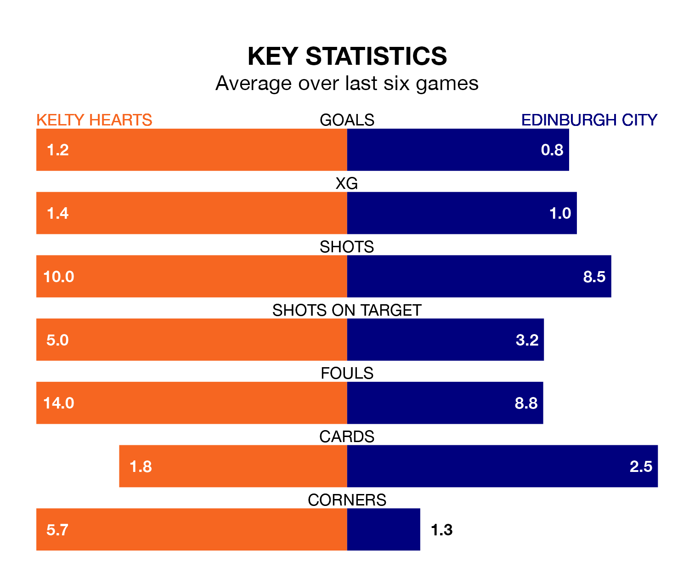

Kelty Hearts are heavy favourites to keep all three points at home in Tuesday's late kick-off against Edinburgh City.
Kelty Hearts, who sit sixth in League One with 22 games played, are priced at 1.1 to seal victory at New Central Park.
Sitting four places and 18 points behind them in the table, Edinburgh are 15.0 to win with *Betting Company*, while the draw is at 7.5.
Kelty Hearts are in mixed form in League One, with one win and four draws from their last six games.
With no wins and a draw over that period, Edinburgh's form is much worse – they have taken one point from 18, compared to the home team's seven.
In the last 10 years, Kelty Hearts and Edinburgh have played each other on 11 occasions. Kelty Hearts won five of them, Edinburgh three, and they drew three times.
On average, Kelty Hearts scored 2.0 goals and Edinburgh 1.5 in those matches.
Their last meeting was on February 3, when Kelty Hearts won 3-0 away.
With 27 goals in 23 games so far this season, City are the league's second-lowest scorers with 1.2 goals per game. And they are conceding more than average, letting in 65 goals at a rate of 2.8 per game.
Kelty Hearts are also below average scorers, with 1.4 goals per game, compared to a league average of 1.5. They have conceded 1.5 goals per game.
In Robert Mahon, the visitors have one of the league's most on-form strikers so far this season. He has notched seven goals in 16 appearances, to sit sixth in the scoring charts.
Kelty Hearts's top scorer, with seven goals in 15 games, is Alfie Bavidge.
Kelty Hearts's last match was on Saturday, a 0-0 draw against Queen of the South.
Edinburgh lost 3-0 against Montrose last time out, also on Saturday.
Tuesday's match will be refereed by Steven Kirkland, who has taken charge of seven League One games so far this season, issuing no red cards and booking 37 players. He has awarded four penalties.
The last Edinburgh game Kirkland refereed was the 3-2 win at home against Annan Athletic on October 28. He is yet to oversee a match featuring Kelty Hearts this season.
Updated: 13:30 (UTC), 12/02/24